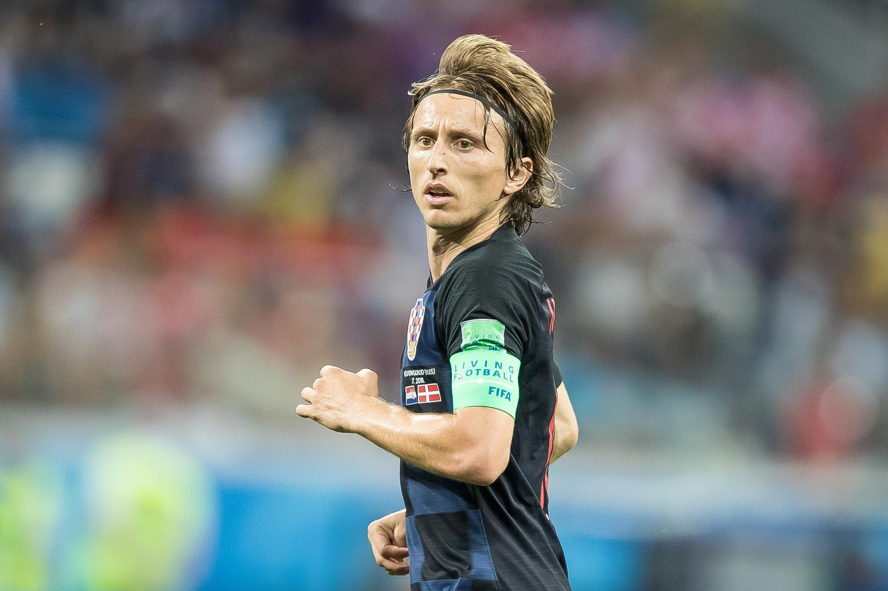
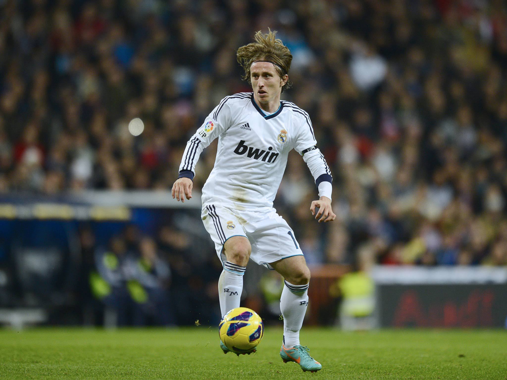
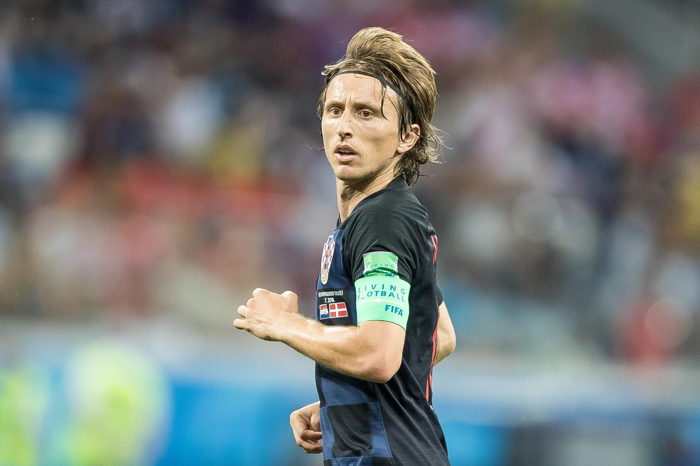
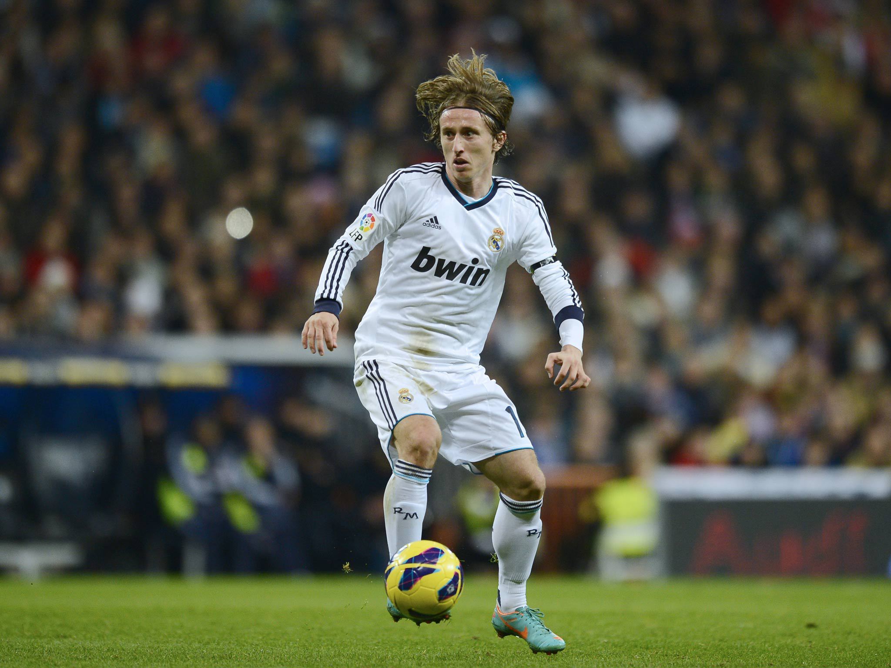
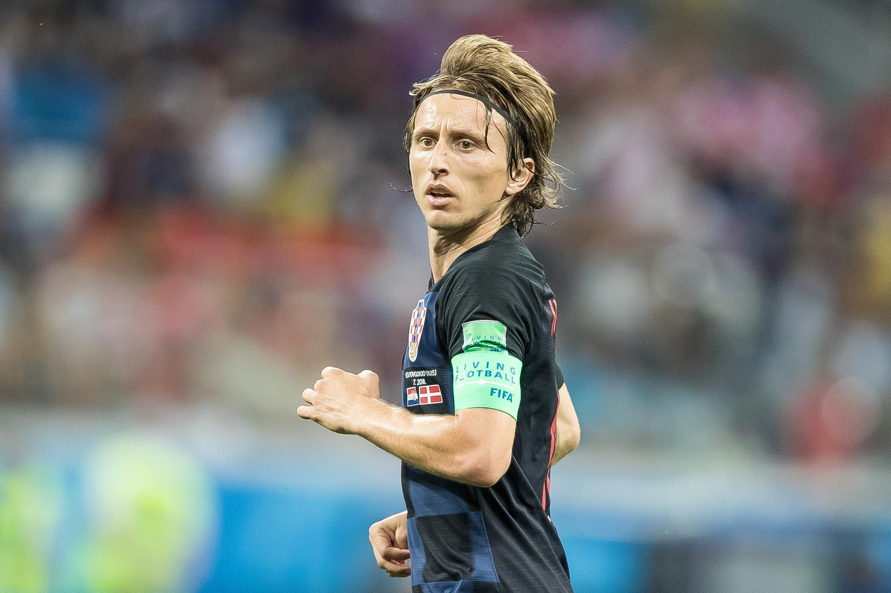
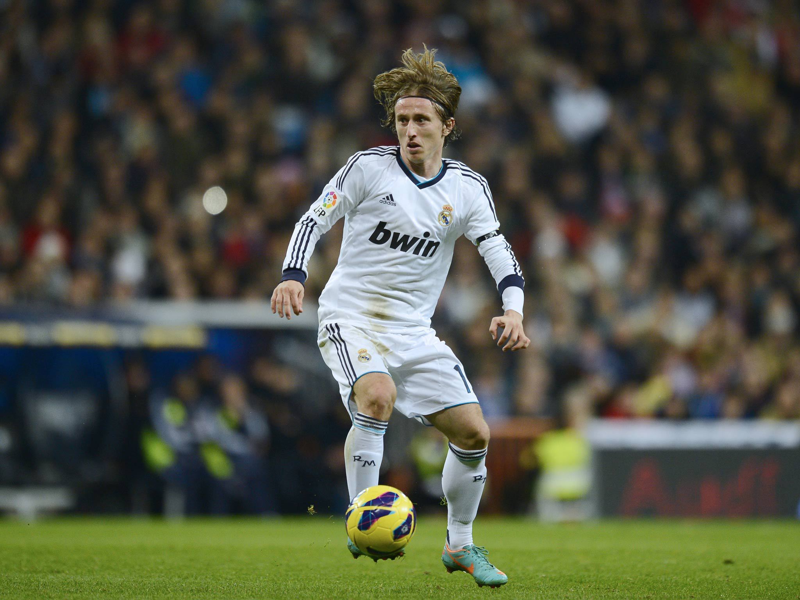

Luka Modrić, widely recognized as one of the finest midfielders of his generation, has left an indelible mark on world football through his intelligence, vision, and leadership. A key figure in both Real Madrid's golden era and the Croatian national team, Modrić's ability to control the tempo of the game and deliver precise passes has set him apart. He played a pivotal role in Croatia’s historic run to the 2018 FIFA World Cup Final, earning the Golden Ball as the tournament’s best player. With numerous Champions League titles and individual accolades, including the 2018 Ballon d'Or, Modrić exemplifies excellence and perseverance. His humble demeanor, work ethic, and resilience have inspired a new generation of footballers across the globe.


📛 Full name: Luka Modric
🎂 Birthday: 09/09/1985 (Age: 40)
Nationality: Croatia
📏 Height: 1.72m
⚖️ Weight: 66,2kg
🎯 Primary Position: central midfielder
⚽ Goals: 81
🤝 Assist: 104
🎮 Games: 654